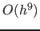

Next: Time integration Up: ManualJan2018 Previous: Time integration using the Contents
MATLAB provides a suite of ODE-solvers. To create a combined integration-continuation environment, we have made them all accessible in MATCONT and added two new ones, ode78 and ode87. ode78 is an explicit Runge-Kutta method that uses 7th order Fehlberg formulas [Fehlberg 1969]. This is a 7-8th-order accurate integrator, therefore the local error normally expected is . ode87 is a Runge-Kutta method that uses 8-7th order Dorman and Prince formulas. See [Prince and Dorman 1981]. This is a 8th-order accurate integrator therefore the local error normally expected is . In MATCONT the choice of the solver is made via the Integrator window that is opened automatically when the curve type O (Orbit) is chosen. We note that the Starter window has a SelectCycle button that allows to start the continuation of periodic orbits from curves computed by time integration.